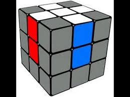
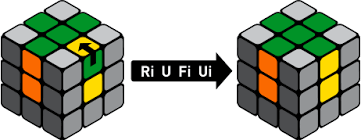

Start by holding the cube with both hands with the white face on top (identified by it's center panel being white). We will use the bottom layer (with yellow face) as a holding ground to manipulate our edge pieces before rotating them into position on the top layer.

For all of these, it doesn't matter the orientation of the edge piece (which side is white and which is coloured). We will fix that up in the next step if need be. Now we will place each white edge piece one after the other. The order in which you place them doesn't matter. Move the edge piece down to the bottom layer. Rotate the bottom layer to align the piece directly below the place on the white face where you want it to be. Depending on if the white panel of the edge piece is facing down or to the side use one of the methods listed below to move it to it's correct position on the white face. Pick the next white edge piece to place.
You may also get stuck in a tricky situation shown below.
